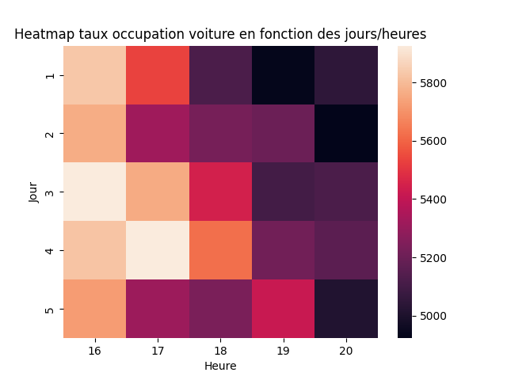

Ansinelli Yohann
Paulet Aksel
Étudiants en 1ère année de Bachelor Réseaux et Télécommunications
Ansinelli Yohann
Paulet Aksel
.png)
Projet Traiter des données
Projet
Outils utilisés
Cette courte partie permettra de mettre en avant les outils/librairies python que l'on a utilisé pour ce projet.
Requests
La librairie requests permet d'envoyer des requêtes http via python directement. Dans notre cas elle nous a permis d'envoyer des requêtes au open data de Montpellier pour récupérer le contenu des pages à savoir l'intégralité des données.
LXML / BeautifulSoup
La librairie lxml permet de manipuler des données xml. Dans notre cas les fichiers de données étaient en xml donc la librarie nous permettait de trouver des données précises comme par exemple le nombre de places occupées pour chaque parking de vélo. La librarie BeautifulSoup elle nous permet d'analyser les documents HTML et XML grâce aux balises.
Time
La librairie time permet de manipuler le temps dans un programme. Pour le projet elle a permis à notre code de faire sa boucle toute les heures par exemple, on peut donc choisir la durée de pause de notre programme.

Graphique de données
Voici un graphique d'une expérience faite sur une semaine précisément avec 117 échantillons espacés chacune de 1 heure. On peut constater tout au long de la semaine qu'il y a un plus haut taux d'occupation des parkings voitures en fin de semaine. En revanche pour les vélos c'est le contraire qui est observable avec la diminution du taux d'occupation des vélos tout au long de la semaine.
Ci-dessous vous pouvez retrouver une carte thermique du nombre de places de voiture occupées en fonction des jours/heures qui permet de voir s'il y a un jour avec plus d'influence que d'autres. Sur cette carte on peut remarquer que le jour 3 il y a le plus d'influence et que c'est à 16 heures que les parkings sont les plus occupées.

Tableau de données
Récapitulatif des données obtenues sur une durée de 1 semaine
| Parking | Places occupées | Pourcentages places occupées | Total |
|---|---|---|---|
| Voiture | 3934.242 | 33,15% | 11868 |
| Velo | 314.58 | 42% | 739 |
Notre étude est faite avec des données de 1 semaine, on peut donc clairement dire que tous les parkings n'obéissent pas aux mêmes règles d'évolution puisque tout dépend de l'emplacement où se situe le parking dans la ville et s'il y a beaucoup d'activités commerciales par exemple aux alentours ou s'il y a beaucoup de bureaux d'entreprises.
Corrélation
Le but de ce projet était donc de savoir si il y avait une corrélation entre les parkings voitures et les parkings vélos, après avoir fait une fonction qui calcule la covariance ainsi que la variance des vélos et des voitures on peut voir qu'on obtient une corrélation de 0,82 ce qui est très proche de 1 on peut donc constater qu'il y a une corrélation qui existe entre les parkings vélos et les parkings voitures.
Vidéo programme
Voici une vidéo sans son montrant la fonctionnalité de notre programme et quelles sont les données qui en resorte.
Yohann Ansinelli — Portfolio Présentation— 
Aksel Paulet — Portfolio Présentation—
En collaboration avec l'open data de Montpellier Méditerranée Métropole
Page Inspirée de SRT Template